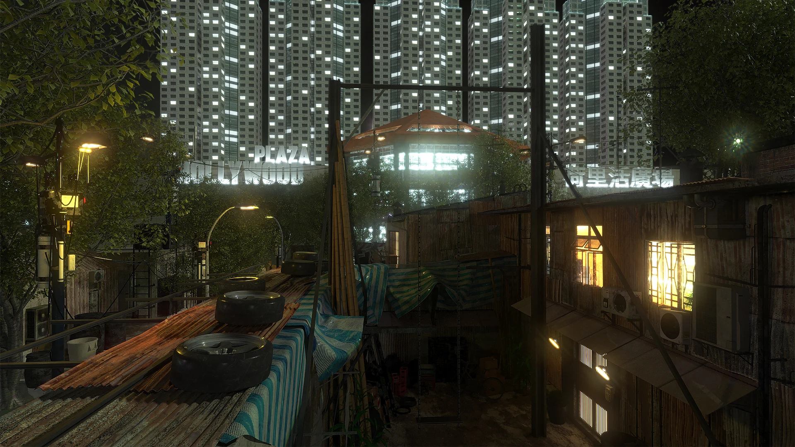
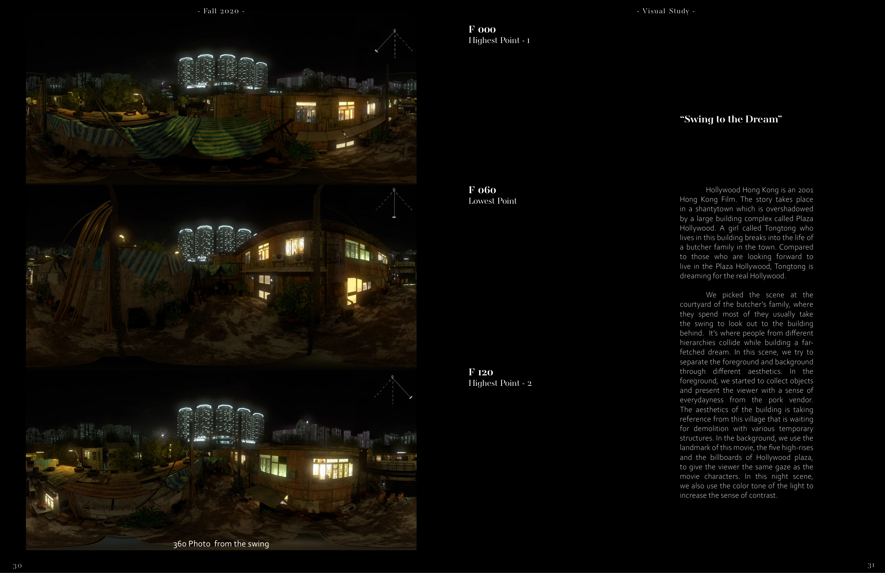
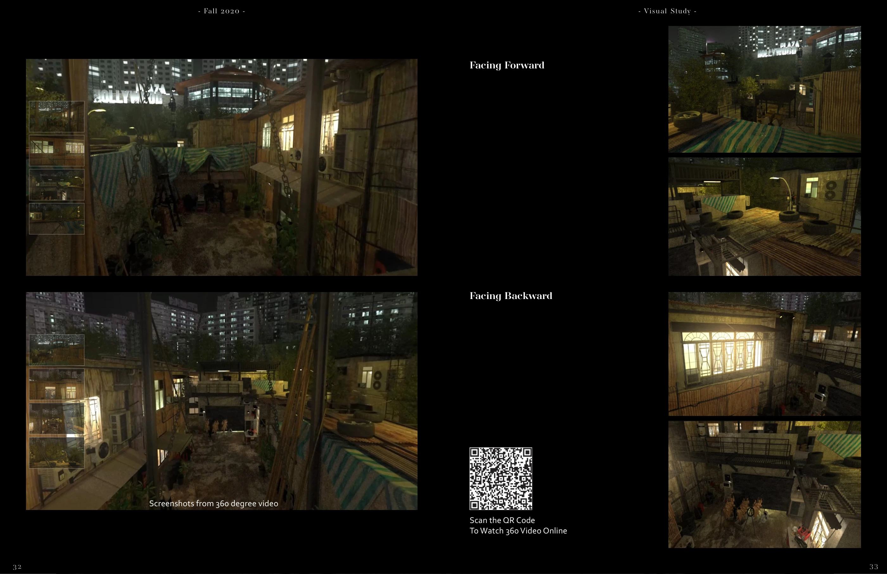

Cinematic environment · VR / 2020
Hollywood Hong Kong
A reconstructed courtyard seen from a swing: everyday life in the foreground, an aspirational skyline beyond it.
Collaboration with I Hsiang Wang · SCI-Arc, Fall 2020 · Instructor: Alexey Marfin
3ds Max · V-Ray

01
Swing to the dream
Drawing on the film Hollywood Hong Kong, the scene places the viewer in a butcher family’s courtyard. The swing reveals the contrast between temporary structures nearby and the Plaza Hollywood towers behind them.


02
Turning the gaze
Collected everyday objects, contrasting light, and carefully built foreground and background establish the scene. Looking forward and turning back reveal different sides of the same place.

IN MOTION
A film excerpt.
A selected sequence from the project.